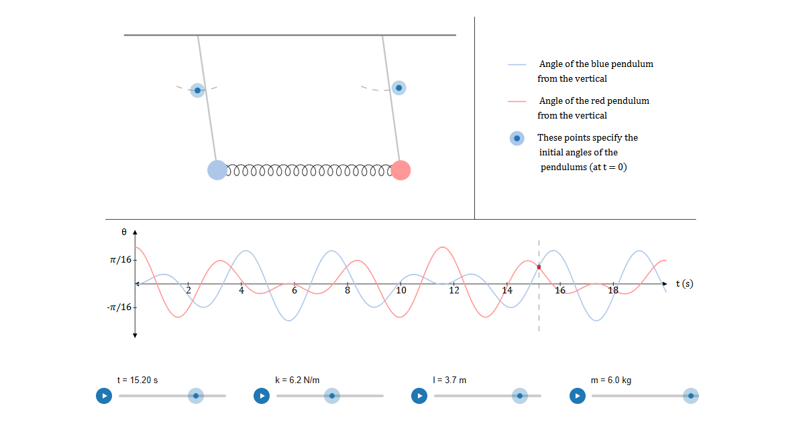

I always felt that interactive physics simulations can greatly help in understanding any topic. However, I found that good sites are hard to come by, for a few reasons. The ones written by humans, crafted carefully so that they are accurate as well as visually coherent, are rare, and if they exist (apart from a few exceptions), they are mostly pretty basic middle-school level stuff (one good counterexample would be Paul Falstad's site, but this is the only one I know of). The ones written by AI are flooding the web, but their quality is usually exceptionally bad, as AI (at least a year ago) couldn't create coherent visuals or correct physics in such applets.
So I got the idea of creating a website for undergrad level interactive simulations, that is nicely structured, coherent and correct (I hope you'll find that I achieved my goal; if not, please contact me). The only thing was, I had no concept for the structure of it, as I did not want to just create simulations off the top of my head, and structure them based on themes. So I searched for physics books as inspiration.
When I first read The Feynman Lectures on Physics, I felt that this book offered something different from a more traditional textbook. I intentionally do not say it offers more, as Feynman famously teaches on a very high level, with uncommon tricks that substitute basic methods used all over physics, so if one wants to learn traditional problem-solving, this is certainly not the book for that. However, unlike a traditional book, Feynman offers very intuitive explanations, detailing why exactly physical phenomena happen, especially in Volume 1.
So I came to the decision to use the structure of The Feynman Lectures on Physics, but of course, I paid attention not to reexplain Feynman, just visualize his ideas in an interactive way. Currently, only Volume 1 is covered. I hope to create simulations for Volume 2 too, if I have time and patience. Each simulation page contains the simulation itself, the variables that can be changed below, and their descriptions. Also, there is a red button with an "F" in it, a link that leads to the relevant section in The Feynman Lectures on Physics.
On some pages, there is a Things to Notice section that aims to point out a few details that may not be obvious at first, or explain some behind-the-scenes about the simulation. Sometimes, in this section one can find detailed derivations, especially in the Pseudo Forces simulation, where forces are analyzed in detail. Other times, the section details some interesting, related topic, for example the idea behind the Nyquist–Shannon sampling theorem in Multiple Source Interference.
Although the structure is inspired by The Feynman Lectures on Physics, I think all simulations can be understood without having read the book. Physics knowledge can of course be acquired from other sources, but I do recommend reading the books; they are great.
I hope you'll find something interesting on the site. There are currently about 50 simulations or so, their source code available on GitHub. Again, the project is not affiliated with Caltech or The Feynman Lectures on Physics; I simply took inspiration from the book's structure.